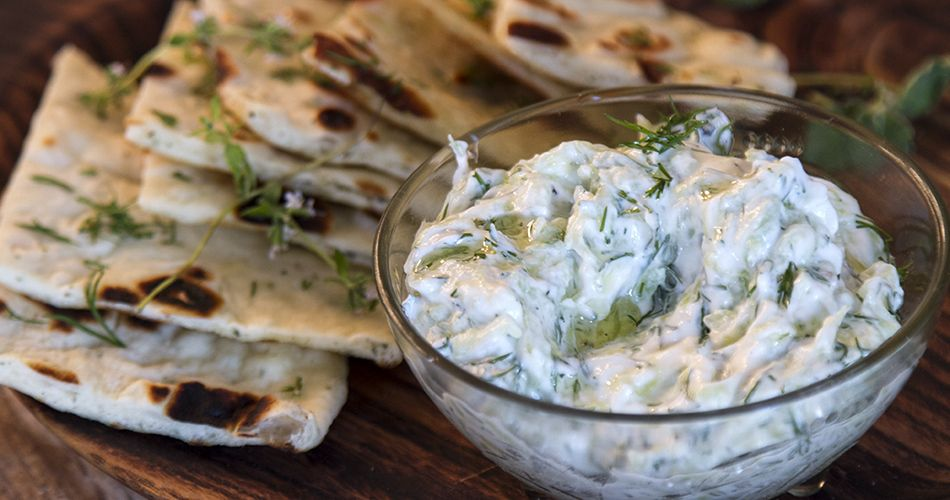

Tzatziki

Description:
Tzatziki is a traditional Greek dip made primarily from yogurt and cucumbers. It is great with
toasted pita breads and as a dip with any kind of meat!
Ingredients
- 4 tablespoons olive oil
- 2 tablespoons red wine vinegar
- 1 clove garlic, minced, or more to taste
- 1 large cucumber
- salt to taste
- 1 (17.6 ounce) container full fat plain Greek yogurt
Steps:
- Stir together olive oil, vinegar, and garlic in a bowl and let sit while you prepare the cucumber.
- Peel cucumber and cut in half lengthways; scrape out all the seeds. Grate cucumber with a cheese grater into a sieve set over a bowl.
Sprinkle with salt. Strain out as much liquid as possible by pressing down in the sieve with the palm of your hand.
Alternately you can wring cucumber out in a clean tea towel. Add cucumber and yogurt to the garlic mixture. Mix until well
combined and season with salt to taste.